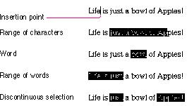
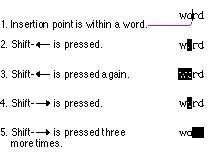
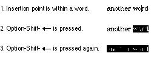

|
|
Selections in TextIn most applications, the user is required at some point to edit text. The principle of consistency (both within and among applications) requires that text be selected and edited in a consistent way, regardless of where it appears.A block of text is a string of characters. A text
selection is a substring of this string, which can have any
length from zero characters to the whole block. Each of the
text selection methods selects a different kind of
substring.  The insertion point is a zero-length text selection. The
user establishes The insertion point shows where text will be inserted when the user begins typing, or where the contents of the Clipboard will be pasted. As each character is typed, the insertion point is moved to the right of that character. Selecting With the MouseThe range selection method can be applied to text. The user selects a range of text by dragging through the range. A range can be a range of characters, words, lines, or paragraphs, as defined by the application. If the user extends the range, the way the range is extended depends on what kind of range it is. If it's a range of individual characters, it can be extended one character at a time. If it's a range of words (including a single word), it's extended only by whole words.The user selects a whole word by double-clicking somewhere within that word. If the user begins a double-click sequence, but then drags the mouse between the mouse-down and the mouse-up of the second click, the selection becomes a range of words. As the pointer moves, the application highlights or unhighlights whole words at a time. Selecting RangesA word or range of words can also be selected in the same way as anyother range; whether this type of selection is treated as a range of characters or as a range of words depends on the operation. For example, in a word processor, a range of individual characters that coincides with a range of words is treated like characters for purposes of extending a selection, but is treated like words for purposes of "intelligent cut and paste" (described in the section "Intelligent Cut and Paste" on page 299). The following definition of a word applies in the United States and Canada and in some other countries. In many countries, the definition differs to reflect local formats for numbers, dates, and currency. A word is defined as any continuous string that contains any of the following characters:
is selected. These are examples of words:
[x+y-(4*3)^(n-1)] simply by double-clicking [ or ]. Selecting With the Arrow KeysTo use arrow keys to make a text selection, the user holds down Shift while pressing an arrow key. If it's important that your Macintosh application makes use of the numeric keypad, you shouldn't use these Shift-arrow key combinations. This is because the keypad's codes for the four Shift-arrowkey combinations are the same as those for the keypad's +, *, /, and = keys. If the use of a Shift-arrow key combination for making selections is more important to your application than is the numeric keypad, the following paragraphs describe how it should work. When a Shift-arrow key combination is pressed, the
active end of the selection moves and the range over which
it moves becomes selected. If both the Shift key and
another modifier key are held down, the end of the
selection moves as defined for the particular modifier key,
and the range over which A selection made by using the mouse is no different from
one made by using arrow keys. A selection started with the
mouse can be extended by using In a text application, pressing Shift and either Left
Arrow or Right Arrow selects a single character. If the
Left Arrow key is used, the anchor point of the selection
is on the right side of the selection, the active end on
the left. Each subsequent Shift-Left Arrow adds another
character to the left side Figure 10-20 summarizes these two different series of steps. Figure 10-20 Selecting with Shift and arrow keys  Pressing Option-Shift and either Left Arrow or Right
Arrow (in a text application) selects the entire word
containing the character to the left or right of the
insertion point. Assuming Left Arrow is pressed, the anchor
point is at the right end of the word, the active end at
the left. Each subsequent Option-Shift-Left Arrow adds
another word to the left end of the selection, Figure 10-21 Selecting with Option-Shift and arrow keys  When a block of text is selected, either with a pointing device or with arrow keys, pressing either Left Arrow, Right Arrow, Up Arrow, or Down Arrow deselects the range. If Left Arrow is pressed, the insertion point goes to the beginning of what had been the selection. If Right Arrow is pressed, the insertion point goes to the end of what had been the selection. |